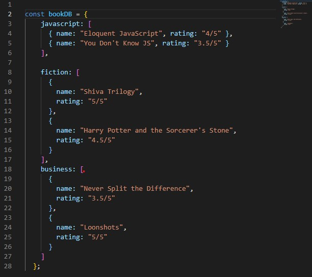

Objects And Arrays
5th September,2021maybe as I learn more about programming I will find more fascinating things in the HTML, CSS and Javascript world but presently in data structures I find objects and arrays very Interesting, I'll tell you why?
Objects
Objects stores data in the form of a key:value pair,
you give the key you get the value and it is enclosed within
these "{}"" braces.
A typical objects look like-
Example: 
Think of object like that early morning cartoon character Oswald--
He's again out to run some errand---holding winnie's leash--henry gave
him some ice---daisy gave him a flower--baby katarina some chocolate,
his tentacles here are the keys/properties.
this model is called "tentacle model" 🐙
with objects you can objectify things in a good way.

-
With the help of
-
(.) dot notation

-
( [] ) square brackets

We usually make us of dot notation and
we use square brackets when the property
isn't that clear.
and you can also modify an objects property
values, externally--

Arrays
Array is a list of things-it has all the things stored in a list like order
Example:

The data type a little similar to arrays is strings but we cannot do calculation and we certainly cannot put individual
things apart,yet together.
Example:
strings "a" + "bc" = abc
and if "1" + "2" =12
so to do numeric operations we take Arrays
How to access an Arrays' values?

the syntax to access values is :
groceryList[i] , where i=number of the Array element.
Now if i ask you to get me milk from groceryList,
your instinct would be -> groceryList[1]--->😑
but No in Arrays we count elements from 0
that is---to get milk---you have to type -> groceryList[0]

Here, we created an object superHeroes
and added superMan and BatMan inside it. superMan and batMan are keys/properties and also individual object.
you can also convert all the keys' in an object to Array.
Object.keys(object name)

You can also combine an Array and Object.
example:

Here we have created a database dB which is an object,
inside we have--
defined objects(genre) : javascript ,business ,fiction.
the object (genre)here are keys to constDB
and objects(genre) have values in an Array
inside the array we have two more objects(book-names),
we have combined our knowledge of Array and objects and
successfully created a book database🎉
One more analogy i found in the book was that objects and arrays give us the ability to put different things in a single value like putting all related things in a bag and running around with it, instead of trying to hold everything. You must be thinking🧐 Which book ? Eloquent Javascript
If you are beginner>beginner,
you will definitely find it confusing, as this book
is not going to spoonfeed you everything.
This book has no mercy for beginners'.
Always Remember👵
Programming is all about Mental Toughness. The difference between you and someone earning high salary is the ability to not give up.
"Persistence is the key" (pun intended)
-Tanay Pratap